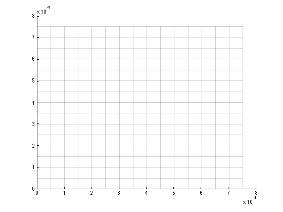
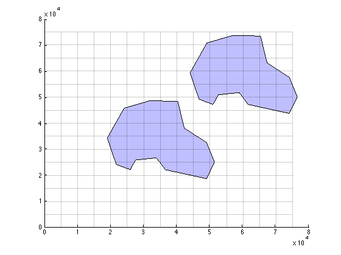
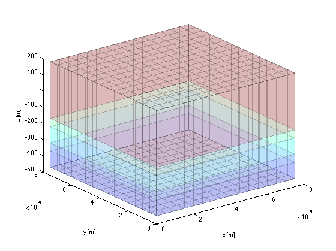
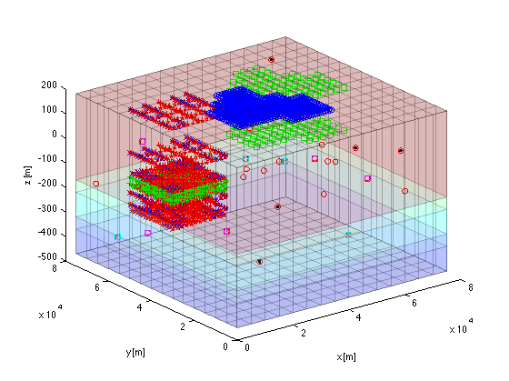

Particle tracking tutorial
Based on the example given in the USGS Modflow 2000 manual, Open-File Report 00-92
using LPF instead of BCF package. This implies that: HY and TRAN are thus replaced by kh VCONT is replaced VKCB BCF package in sheet NAM is off and LPF package in same sheet is on.
This tutorial focuses on defining starting locations and particles in mfLab
TO 120217
Contents
- Clean-up the workspace and define basename of model
- Define a grid
- Properties of the layers and confining beds
- Reharge
- Drains
- Wells
- Starting points for particle tracking using MODPATH
- Defining particle groups
- Method 1: (corresponding to inputStyle 1 (see modpath6 manual))
- Method 2: (corresponding to inputStyle 2 (see modpath6 manual)
- Method 3: inputStyle 3 (see modpath 6.0 manual)
Clean-up the workspace and define basename of model
clear variables; close all; basename='ex2';
Define a grid
Grid line coordinates are in feet as in the original mf2000 example
xGr = 0:5000:75000; yGr = 0:5000:75000;
The grid has 3 aquifers and 2 confining beds. Hence 6 z-plane elevations are required. The layers are all horizontal, so a zGr vector is sufficient.
zGr = [200 -150 -200 -300 -350 -450];
LAYCBD defines which aquifers (model layers) have a confining bed attached to their bottom.
LAYCBD=[1 1 0];
Generate a grid object which remembers the grid and performs useful grid functions.
gr=gridObj(xGr,yGr,zGr,LAYCBD);
%Show the grid
gr.plotGrid;
 Properties of the layers and confining beds
Confining bed properties end with cb for clarity.
kh = [1e-3; 1e-4; 2e-4]; kv = [1e-3; 1e-4; 2e-4]; vkcb = [1e-6; 5e-7]; por = 0.35; porcb= [0.2 0.3];
Which cells have fixed heads?
IBOUND=gr.const(77); % any positive number is ok IBOUND(:,1,1:2)=-1; % fix head in left column of layers 1 & 2
Initialize starting heads to zeros
STRTHD=gr.const(0);
Full grid arrays of layer properties
POR = gr.const(por); HK = gr.const(kh); VK = gr.const(kv);
Same for reqred properties of confining beds
PORCB = gr.constCB(porcb); VKCB = gr.constCB(vkcb);
Reharge
[PERnams,PERvals] = getPeriods(basename); NPER = size(PERvals,1);
recharge in first stress period as cell array. The 3rd dimension will be used as stress period index. (1 is sufficient for steady-state)
RECH={3.0e-8*ones(gr.Ny,gr.Nx,NPER)};
Drains
Drains are generated here in real world coordinates with a leakance value expressed per m length of drain. Drain properties x,y,elev and leakance are is specified for concrete points and interpolated linaerly by mfLab to add to nodes o model
drn=[5000 37500 0 1/5000;... 50000 37500 100 1/5000]; % [x y Elev Leakance] assumeing layer 1
The grid object method gr.bcnLine(data,'type') can be used to generate a list [iPer iz iy ix head Leakance] Default iPer=1
DRN=gr.bcnLine(basename,'DRN',drn);
Wells
Wells can be generated using specific real-world well properties stored in worksheet 'wells', the flows in worksheet PER and the horizontal conductivity to distribute extraction vertically across the grid cells that make up the well. The gridObj, gr, is necessary to place the wells in the actual grid.
well = wellObj(basename,'wells',gr,HK);
Starting points for particle tracking using MODPATH
By way of example we generate particles that start at the bottom of two ponds. The ponds are of class waterBodyObj, which are defined using two worksheets, the first containing properties of the ponds, the second containing the circumference of each of the ponds.
pond = waterBodyObj(basename,'waterbodies','waterbodies (2)',gr);
waterbody obwl nr(2) in mesh waterbody ddp nr(1) in mesh waterbody ddp nr(1) in mesh waterbody obwl nr(2) in mesh
plot the ponds, setting some graphic properties (the same as for patch)
pond.plot('edgecolor','g','facecolor','b','facealpha',0.25);
You can inspect the properties and values of the ponds both the ones generated and their defiinition in the workbook.
Generate a zoneArray for the grid cells whose center belong to the ponds. The method ZONE uses the pond(i).nr as Id, and includes all ponds in pond array.
zoneArray = pond.ZONE(gr);
You may inspect the zoneArray using any of Matlab's functions. For instance, count the numberof cells in the first pond
for ip = 1:numel(pond) fprintf('\n'); N = sum(zoneArray(:) == pond(ip).nr); fprintf('Waterbody %s, i.e. pond nr %d\n',pond(ip).name,pond(ip).nr); fprintf('Constains %d cells with total area %g\n',N,sum(gr.AREA(zoneArray == pond(ip).nr))); fprintf('It has true area %g\n',pond(ip).area); end fprintf('\n');
Waterbody duckdeep, i.e. pond nr 1 Constains 25 cells with total area 6.25e+08 It has true area 6.16143e+08 Waterbody otbowl, i.e. pond nr 2 Constains 25 cells with total area 6.25e+08 It has true area 6.16143e+08
Defining particle groups
modpath 6.0 orders particles in groups. Each group can have its own properties, that pertain for every particle within the group.
Method 1: (corresponding to inputStyle 1 (see modpath6 manual))
inputStyle 1, specifies the particles for each group as input. To get such a list of particles we generate one here:
Generate random coordinates to illustrate this example
np = 15; XYZ = [gr.xGr(1)+rand(np,1)*diff(gr.xGr([1 end])),... gr.yGr(1)+rand(np,1)*diff(gr.yGr([1 end])),... gr.zGr(1)+rand(np,1)*diff(gr.zGr([1 end]))];
Get particles starting at these points with some extra properties set:
particles = mpath_particleObj(gr,XYZ,'ID',1,'releaseTime',10,'label','myGrp');
Generate a particle group with a given list of mpath_particleObj's as input.
pgrp = mpath_particleGroupObj(gr,particles,'groupNm','group 1','lineSpec','m*');
Method 2: (corresponding to inputStyle 2 (see modpath6 manual)
In inputStyle 2, the global starting locations are specified, together with properties that pertain to the particle group. Again generate a set of global starting coordinates
np = 15; XYZ = [gr.xGr(1)+rand(np,1)*diff(gr.xGr([1 end])),... gr.yGr(1)+rand(np,1)*diff(gr.yGr([1 end])),... gr.zGr(1)+rand(np,1)*diff(gr.zGr([1 end]))];
Then generate a particle group with these coordinates and some extra parameters that pertain to the group:
pgrp(end+1) = mpath_particleGroupObj(gr,XYZ,'groupNm','group 2');
To faciliate generating several particleGroupObj's at once, one may first set up a cell array with the group parameters, with each line pertaining to a particleGroupObj:
pgroups = {XYZ(1: 5,:), 'GroupNm','first','LineSpec','cs','dummy','';...
XYZ(6:10,:), 'groupNm','second','LineSpec','sm','dummy','';...
XYZ(11:end,:),'groupNm','third','releaseTime',34,'lineSpec','k.'};
Then generate the mpath_particleGroupObj's at once, possible using extra varNm,value pairs (here 'releaseTime',5) to specify the same parameters for all groups at once:
pgrp(end+(1:size(pgroups,1))) = mpath_particleGroupObj(gr,pgroups,'releaseTime',5);
Hence, instead of 3 individual calls to mpath_particleGroupObj, only one suffices in which each line in pgroups defines a mpath_particleGroupObj with its own coordinates and properties, while extra arguments in the call of the constructor (outside pgroups, here 'releaseTime',5) gives properties that are the same for all particleGroupObj's and may be overwritten by the specific values as defiend within pgroups. Note that the {'dummy',''} varNm,value pair is neceesary to ensure all lines in the cell array pgroups have the same length. Repeated calls are also possible:
for iGrp = 1:size(pgroups,1) pgrp(end+1,1) = mpath_particleGroupObj(pgroups{iGrp,:}); end Specify the number of points and iFaces for these pond zones
The this way of input also works for inputStyle 1.
Method 3: inputStyle 3 (see modpath 6.0 manual)
inputStyle 3, corespond to the methods of modpath 6, where modpath 6.0 itself generates the particle positions based on user input. The user either uses a zoneArray and the corresponding zones in that array to specify in which cells of the model modpath will put coordinates, or the user specifies a range of cells for this purpose. With the cells known, the user then specfies how many points are to be place in each cell and how these points are to be distributed within the individual cells. The form of the call is: pgrp = mpath_particleGroupObj(gr,zoneArray,zones[,varNm,valaue,varNm,value,....]); if zoneArray is empty and zones is a vector of length 6, then zones is interpreted as [minLayer minRow minColumn maxLayer maxRow maxColumn] range of cells in which to put partiles.
This corresponds to gridCellRegionOption = 1 zoneArray combined with the zone numbers in a vector zones define the cells pertaining to the model. This corresponds to gridCellRegionOption = 2 If one of the varNm,value pair is 'maskLay',laynr, then the first layer in zoneArray is interpreted as valid for laynr, while a possible rest of zoneArray is ignored. This corresponds to gridCellRegionOption = 3
The placement inside the chosen cells is defined using the 'IFace',ifaces pair where ifaces is a vector of ifaces 0 1..6 (see manual modpath). The number of particles and their distribution across each iface or within the cell is determined by the 'placement',placement variable value pair, where placement is a 2 or 3 value vector specifying the number of layer, row and column subdivisions across ifaces and within the cell (if iface==0). The best way is specifying placement as a 3-value vector so that the number of layers,row and column subdivisions is uniquely defined for all specified ifaces.
Example call corresponding to gridCellRegion = 3,
pgrp(end+1) = mpath_particleGroupObj(gr,[],[1 3 2 5 4 7],'groupNm','goose island',... 'IFace',[1 2 3 5],'placement',[2 4 3],'releaseTimes',1:10:100,'lineSpec','bx');
One can achive the same with zoneArray and zones, in the following way, which corresponds to gridCellRegion = 2.
zoneArray = false(gr.size); zoneArray(2:5,4:7,1:3)=true; pgrp(end+1) = mpath_particleGroupObj(gr,zoneArray,true,'groupNm','swan coast',... 'IFace',[1 2 3 5],'placement',[2 4 3],'releaseTimes',1:10:100,'lineSpec','rp');
Instead of true one may use any positive number. This however, makes zoneArray 4 times as big in memory but has an equivalent outcome.
% To change this example to one coresponding with gridCellRegionOption = 3, pgrp(end+1) = mpath_particleGroupObj(gr,zoneArray,true,'maskLayer',2,'groupNm','dog forest',... 'IFace',[1 2 3 5],'placement',[2 4 3],'releaseTimes',1:10:100,'lineSpec','g+');
In this case, maskLayer=2, which implies that the zoneArray applies to model Layer 2. mfLab will apply the first layer in zoneArray, i.e. zoneArray(:,:,1) as the maks for layer maskLayer.
In none of the examples does gridCellRegionOption need to be specified. It follows from the input. Specifying gridCellRegionOption explicityl using a varNm,value pair may cause an error.
All fields of mpath_particleGroupObj may be specified explicitly by means of varNm,value pairs on the input line of the call. Good examples are 'groupNm',aname, 'releastTime',releaseTimes, and 'LineSpec',lineSpec. aname is a string, releasTimes is a vector of increasing particle releaseTimes, where the lenght of the vector >0. LineSpec is any legal matlab lineSpec that can be used in plot to specify color, dashes and makers of lines.
To facilitate generating several mpath_particleGroupObj at once, we may replace the third arguments, i.a. the zones by a cell array of the form zoneVals = {zones, varNm,value, varNm,value, ... ; ... zones, varNm,value, varNm,value, ... ; ... .... zones, varNm,value, varNm,value, ....}
the cell array zoneVals yields one mpath_particleGroupObj per line. the first argument on each line is a vector of zone numbers that refer to the zoneArray that pertains to all of the groups. Following arguments on each line come in varNm,value pairs and define a property for this partilular group. Dummies may be used to make sure that each line in the cell array zoneVals has the same length. Arguments following zoneVals in the call of the mpath_particleGroupObj constructor are also in the varNm,value pair form. These parameters define parameter values that pertain to all of the generated groups. These may be overwriten by the more specific value defined for the individual groups.
Example: First define the variables and values for the individual groups in a cell array
zoneVals = {pond(1).nr,'IFace',6,'placement',[5 5],'groupNm',pond(1).name,'LineSpec','bo'; ...
pond(2).nr,'IFace',0,'groupNm',pond(2).name,'releaseT',[0 50 150],'LineSpec','gs'};
Generate a zoneArray (in this case containing the cells within the two ponds defined above
zoneArray = pond.ZONE(gr);
Then generate the mpath_particleGroupObj's
pgrp(end+(1:size(zoneVals,1))) = ... mpath_particleGroupObj(gr,zoneArray,zoneVals,'groupNm','cat roof','lineSpec','kx','placement',[2 2 2],'releaseTimes',[1 10 25 50 100]);
You may inspect the different mpath_particleGroupObj's generated until now. However, the particles are generated by modpath and, therefore, not contained in the groups. These particles can, however by geneated by mfLab as well using the method getParticles(gr). In that case the computed particles are added to the mpath_particleGroupObj's and can be inspected as such:
pgrp = pgrp.getParticles(gr);
To show all the generated particles, they can be placed in a 3D mesh and visualized using the specified lineSpecs Generate the plot of teh mesh
figure; hold on; view(3); xlabel('x [m]'); ylabel('y [m]'); zlabel('z [m]'); gr.plotMesh('faceAlpha',0.15);
Show the particles
pgrp.plot(); save underneath pond